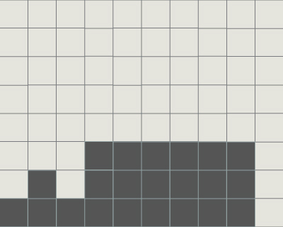
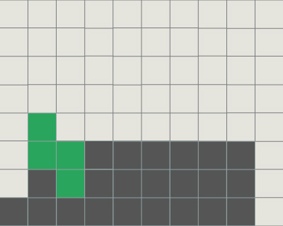
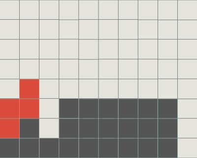
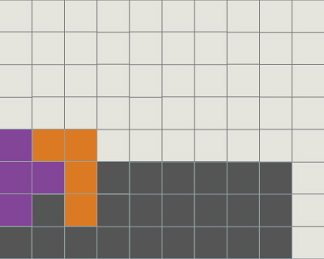
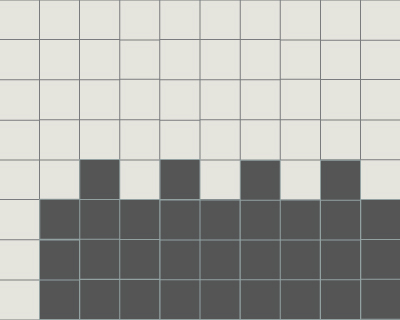
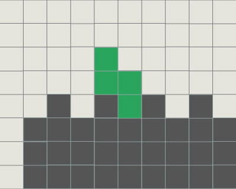
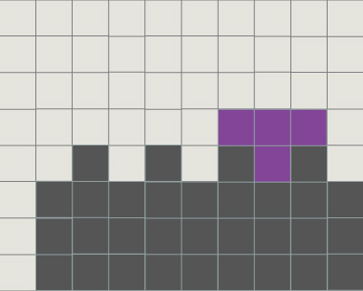
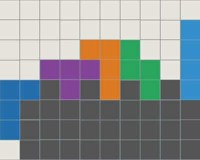

Stacking 平積み
平積みとは
平積みとは端を1列空けてミノを積んでいき，Iミノでテトリスを狙う積み方で，テトリス積みともいいます．Iミノ以外のミノを隙間なく積んでいき，BackToBackでテトリスをすることが理想です．
テトリスで最も基本の積み方であり，最も重要といっても過言ではないでしょう．
メソッド
平積みを綺麗に，素早く行うために重要な事がいくつかあります．ミノを寝かせて置く
ミノを寝かせておくことは綺麗な地形を保つコツの1つです．ミノを立てた（出現時から±90度回転した）状態では，地形が高くなってしまうことが多く，後に積みづらくなってしまいがちです．
できるだけ避けて積むことが大事でしょう．また，立てておく場合でもネクストを見るなど，綺麗な地形を維持できることを確認することが必要とされるでしょう．
特定ミノ要求を避ける
ミノを置くことで．そこに置けるミノを限定してしまうような置き方は避けなければなりません．
例えば凸形の地形でSZを使用することは推奨されません．LJやIミノに限定してしまうからです．



このような場合は，ネクストにそれらのミノがあることを確認するか，この部分以外の地形が綺麗である必要があります
なお，TミノとLJミノは相性がよくこの例を解決する1つの方法でしょう．この例もそうですが，
Tミノを立てる向きを変えると受けられるミノがLとJ，SとZで変わることは多いので覚えておくとよいでしょう．

受けられるミノを増やす
特定ミノ要求を避けることにも通じていますが，どのミノが来ても置けるようにしておくということは重要です．平らな地形をある程度確保することは1つの方法でしょう．
極端な例ですが，凹凸を繰り返す地形を作ってしまうとOミノを置くことはできないばかりか，綺麗な地形を作ることも困難です．
  
このような場合，削ってしまうほうがよいかもしれません．

ネクストとホールドへの注意
綺麗な地形を保つときにネクストを見ることは良い手段です．次のミノを意識してミノを置くということを繰り返せば自然と受けやすい地形になっているでしょう．
その際にホールドを使用することは悪くありません．
しかし，ホールドの中に入れたIやT以外のミノは使えるときに使うことを意識したほうが良いかもしれません．
慣れないうちは，ミノの置き場所に困ったときだけホールドを使ってしまいます．
これは次にホールドを使うときに，ホールド内のミノも置くことができなければきちんと積むことが困難になる可能性を孕んでいるということです．